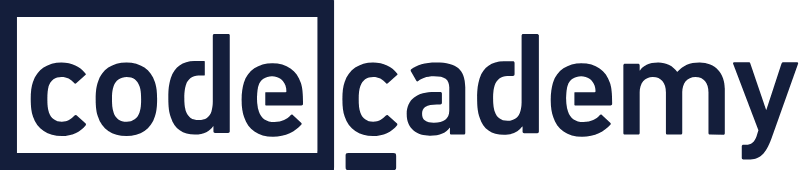
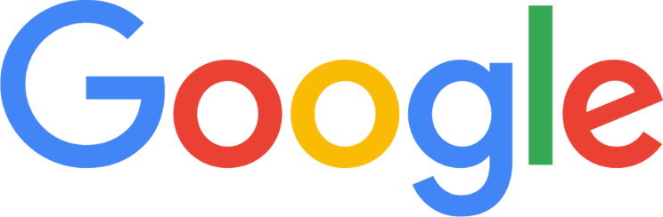
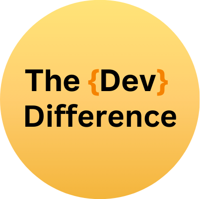
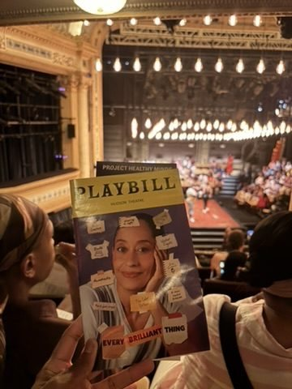
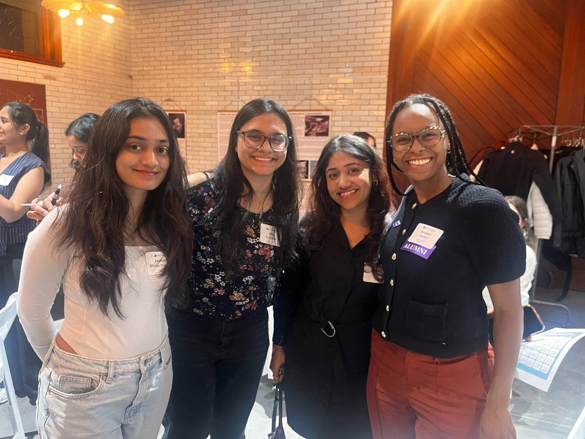
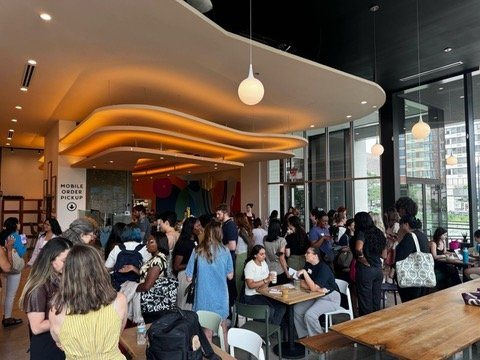
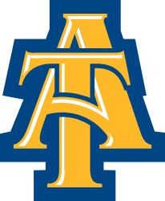

Building products with people at the center.
Welcome to my story. I love turning people problems into solutions and watching the magic that happens when a tool actually changes a life. Come learn more!
- B2B2C
- B2B
- Products for learners
- Products for good
- Technical PM
- MS Computer Science


Featured projects

Designing the university career services user analytics side
In addition to mock interviews for learners, Universities can engage from the admin dashboard and purchase seat-based licensing. Here is the admin dashboard walkthrough, with interviews practiced, licenses and student communications.
- Product Design
- UI/UX
- B2B SaaS
- Admin Dashboard
- Usage Analytics
Blerdle
A daily web game with 300 users, built with a team to bring a little joy to the middle of someone's day. Proof that a focused product can be simple, understandable and worth coming back to.
- Consumer Product
- Daily User Retention
- Game Design
- Shipped with a Team
About me
My mission is to use technology to help people live a more well-rounded, secure, and beautiful life.
Studied Anthropology at Dartmouth College, then spent 4 years in recruiting for teams like Google’s Android OS and Security teams and Codecademy’s curriculum and data teams. I learned the business and need to prioritize people and culture.
I was so inspired by the product and engineering teams I worked closely with that I wanted to not just hire the people building, but build with them. So I transitioned to tech with a pre-masters at NYU Tandon School of Engineering, that led me to a Masters in Computer Science at University of Chicago.
These programs taught me to break problems into smaller scope, build reusable components, and design with UI and UX in mind. I put that into practice as an intern at ADP, where I helped lay the foundation for automated testing of their revamped AI mobile app experience.
Now I am 3 years into building a startup, The Dev Difference mock interview and AI assessments tools, grown out of The University of Chicago Data Science and AI startup labs. We grew to 60+ universities, 2,000+ students and job seekers, and 10 hiring startups on the hiring side. My first question is always “what did the data say?”, whether that means more interviews, customer feedback or platform analytics. Following the data always helps roadmap and outline the next winning steps.
My superpower: going from deep research to a complete product that excites users and meets their needs, across B2B and B2B2C deals and cross-functional teams.
Topics I can't stop talking about: education, nontraditional career pathways, wellbeing starts with family mental health.



Words from recommenders
“Jovanay is highly intelligent and has a passion for learning. She was the subject matter expert for hiring within the Curriculum department and expertly trained junior team members on its operations, showing excellent leadership. Jovanay is incredibly clear and concise in crucial conversations, always willing to go above and beyond the scope of a project, and incredibly well-researched.”
“Jovanay brings a fresh perspective to the technology advisory committee and deep passion for the success of student jobs. She has been professional and shared time and knowledge, and a great thought partner on thinking deeply about how to solve critical student success problems at a district-wide level for CPS. We’re lucky to have her expertise! Her perspective on how companies have been updating their hiring processes for AI has also been invaluable.”
“Jovanay’s entrepreneurial spirit brings real excitement to students who want to see themselves creating something. She brings others along with her, and the product she has built has given our students extra practice and the confidence to land jobs.”
My interest and community



Outside of work, you'll find me serving in my church community, in the audience for dance and theater, or organizing events for women building in tech.

Scholarship fund and mentoring
This is my personal scholarship fund, sponsoring students from my hometown in rural Northwest Indiana. I provide a $1K scholarship and mentor each scholar from the summer after senior year through their first year of college to help them start strong.
“Having a mentor during my first year of college helped me navigate the challenges that came with adjusting to a new environment and figuring things out along the way. Having someone I could turn to for guidance and support made me feel like I wasn’t alone throughout my college journey. Receiving scholarship money also took a huge weight off my shoulders by allowing me to focus more on school without constantly worrying about the financial burden of college.”
2025–2026 Carter Scholarship Recipient,
Hammond Central High School, Class of 2025,
Sophomore, North Carolina A&T, Nursing Program
